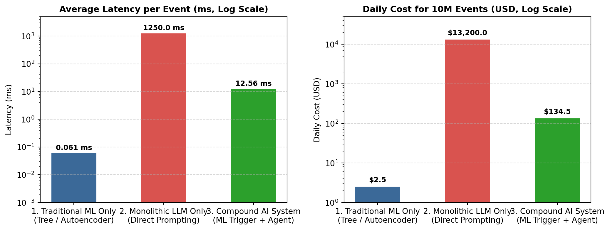

챗GPT(ChatGPT)와 클로드(Claude) 같은 거대언어모델(LLM)이 등장한 이후, IT 전공 학부생이나 주니어 AI 개발자들 사이에서 가장 자주 나오는 질문이 하나 있다.
“이제 복잡한 데이터 전처리나 피처 엔지니어링(Feature Engineering)을 하고 LightGBM, XGBoost, 오토인코더(Autoencoder) 같은 모델을 따로 학습시킬 필요가 없지 않나요? 그냥 데이터베이스에 있는 데이터를 텍스트로 묶어서 LLM 프롬프트에 넣고 ‘이상 징후를 찾아줘’ 혹은 ’내일 수요를 예측해 줘’라고 시키면 끝나는 것 아닌가요?”
겉보기에는 꽤 그럴듯한 생각이다. 실제로 간단한 토이 프로젝트(Toy Project)에서는 엑셀 표 몇 줄을 복사해 프롬프트에 붙여넣으면 LLM이 제법 그럴듯한 분석 결과를 내놓기도 한다. 이 때문에 기업 현장에서도 기존의 머신러닝(ML)·딥러닝(DL) 파이프라인을 모두 걷어내고, 그 자리에 범용 LLM 하나만 두려는 시도가 빈번하게 일어난다.
하지만 이러한 ‘단일 LLM 만능주의(Monolithic LLM)’는 실제 서비스(Production) 환경으로 넘어가는 순간 세 가지 거대한 벽에 부딪혀 실패한다.
데이터 성질의 차이: 표(Tabular) 형태나 센서 수치 데이터에서는 여전히 전통적인 머신러닝·딥러닝 모델이 LLM보다 훨씬 정확하다.
속도와 비용의 한계: 실시간으로 쏟아지는 수백만 건의 로그를 LLM으로 처리하면 응답 지연시간(Latency)과 API 요금이 폭발한다.
결과의 일관성 부족: LLM은 본질적으로 확률에 기반해 다음 단어를 생성하는 모델이므로, 정밀한 숫자 계산이나 일관된 기준 적용에 취약하다.
제대로 된 AI 에이전트 시스템을 설계하려면, 먼저 “무엇을 LLM에게 맡기고, 무엇을 기존 머신러닝·딥러닝 모델에게 맡길 것인가?”부터 명확히 구분할 줄 알아야 한다. 이번 장에서는 학술 논문과 실제 벤치마크 실험을 통해 단일 LLM의 한계를 확인하고, 현대 AI 엔지니어링의 표준인 복합 AI 시스템(Compound AI Systems)의 구조를 살펴본다.
1.1 표(Tabular)와 숫자 데이터에서 전통적 ML 모델이 여전히 강력한 이유
자연어 번역, 문서 요약, 코드 작성 분야에서는 트랜스포머(Transformer) 기반의 LLM이 기존의 모든 알고리즘을 압도했다. 하지만 기업 데이터베이스(RDB)의 80% 이상을 차지하는 정형 데이터(행과 열로 이루어진 표 데이터)와 시계열 수치 데이터(센서, 서버 로그, 금융 트랜잭션) 영역으로 오면 이야기가 완전히 달라진다. 캐글(Kaggle)의 정형 데이터 경진대회나 기업의 실무 예측 모델링에서는 여전히 LightGBM, XGBoost, CatBoost 같은 트리(Tree) 기반 모델이나 도메인 특화 딥러닝 모델이 최상위권을 차지하고 있다.
왜 수천억 개의 파라미터를 가진 초거대 신경망이 정형 데이터에서는 가벼운 트리 모델에게 밀리는 것일까? 프랑스 국립정보학자동제어연구소(INRIA)의 레오 그린슈타인 연구팀(Grinsztajn et al., 2022)은 인공지능 최고 권위 학회인 NeurIPS에 발표한 논문(“Why do tree-based models still outperform deep learning on typical tabular data?”)에서 총 45개의 실제 정형 데이터셋을 대상으로 대규모 비교 실험을 진행하여 그 원인을 세 가지로 규명했다.
1.1.1 1. 계단식 기준선(임계치) 찾기 vs. 부드럽게 뭉개기
실무에서 다루는 표 데이터나 시스템 로그는 특정 기준점(Threshold)을 넘었을 때 상태가 급격히 변하는 특징이 있다.
예를 들어 서버 장애를 탐지할 때 CPU 사용률 >= 95%이면서 메모리 여유 공간 < 5%인 순간 알람이 울려야 한다. 결정 트리(Decision Tree) 기반의 모델은 각 컬럼(열)의 값을 기준으로 데이터를 정확히 수직·수평으로 쪼개기 때문에(if CPU >= 95:), 이처럼 날카롭고 불규칙한 경계선을 찾는 데 최적화되어 있다.
반면 LLM을 포함한 심층 신경망(Deep Neural Networks)은 입력값이 조금 변할 때 출력값도 부드럽게 변하는 ’연속적이고 매끄러운 함수(Smooth function)’를 학습하려는 성질이 강하다. 자연어 문장에서는 단어가 조금 바뀌어도 문맥이 부드럽게 이어지므로 이 성질이 큰 장점이 되지만, 정형 데이터에서는 날카로운 임계치 경계를 뭉개버려 결정적인 이상 징후(Outlier)를 놓치는 원인이 된다.
1.1.2 2. 쓸모없는 컬럼(노이즈 피처)에 대처하는 방식의 차이
현업 데이터베이스의 테이블에는 예측에 꼭 필요한 핵심 컬럼도 있지만, 결과와 아무 상관없는 부수적인 컬럼(예: 등록일자_코드, 임시_플래그, 담당자_내선번호)이 수십 개씩 섞여 있기 마련이다.
Grinsztajn et al.(2022)의 실험에 따르면, 데이터셋에 결과와 무관한 노이즈 컬럼을 추가할수록 딥러닝 모델의 정확도는 급격히 떨어졌지만 트리 기반 모델은 성능을 그대로 유지했다. - 트리 기반 모델: 예측에 도움이 되는(정보 이득이 높은) 컬럼만 골라서 질문을 던지고, 쓸모없는 컬럼은 아예 무시해 버린다. - 신경망 및 LLM: 입력된 모든 컬럼의 값에 가중치를 곱해 하나의 벡터로 섞어버린다(Linear Combination). 단위와 성질이 전혀 다른 나이(세), 결제금액(원), CPU사용률(%), 그리고 쓸모없는 노이즈 컬럼까지 한 냄비에 넣고 끓여버리니 핵심 신호가 희석될 수밖에 없다.
1.1.3 3. LLM은 숫자를 ’크기’가 아니라 ’글자 조각(토큰)’으로 읽는다
숫자 데이터를 LLM 프롬프트에 직접 넣을 때 발생하는 가장 치명적인 문제는 토크나이저(Tokenizer)에 있다. 인간이나 머신러닝 모델은 1024.58을 천이십사 점 오팔이라는 하나의 연속된 ’수치(Float)’로 인식한다. 하지만 LLM은 텍스트를 처리하기 위해 이 숫자를 ["102", "4", ".", "58"] 같은 문자열 조각(Token)으로 잘게 쪼개어 읽는다.
Dziri et al.(2023)이 NeurIPS에서 발표한 연구(“Faith and Fate: Limits of Transformers on Compositionality”)는 트랜스포머 모델이 자릿수가 길어지거나 여러 단계를 거치는 산술 연산에서 왜 자주 틀리는지를 명확히 보여준다. LLM은 내부적으로 계산기처럼 수학 공식을 연산하는 것이 아니라, 학습 데이터에서 본 비슷한 문자열 패턴을 확률적으로 이어 붙이기 때문이다. 수천 줄의 센서 수치에서 평균과 분산을 구하고 미세한 패턴 이탈을 감지하는 일을 언어 모델에게 시키는 것은, 계산기 없이 문학 전공자에게 암산으로 회계 감사를 시키는 것과 같다.
NoteDS Bridge: 기존 ML 개념과 1:1 매칭하기
적재적소의 원칙: 판별·예측 모델(ML/DL)과 생성 모델(LLM)의 역할 비교
학부 머신러닝 수업에서 배운 분류(Classification)·회귀(Regression)·이상탐지(Anomaly Detection) 모델은 에이전트 시대에 사라지는 기술이 아니라, 에이전트의 감각 기관이 된다.
비교 항목
전통적 ML / 특화 DL (LightGBM, Autoencoder 등)
거대언어모델 (LLM) 및 에이전트
주력 데이터
정형 테이블(RDB), 시계열 센서 수치, 로그 스트림
비정형 텍스트(매뉴얼, 보고서, 이메일), 코드
핵심 강점
빠른 수치 패턴 감지, 정확한 확률(\(P(Y\Vert{}X)\)) 계산
문맥 이해, 여러 정보 종합 추론, 도구(API) 호출 계획 수립
처리 속도 / 비용
1건당 수 밀리초(ms) 이하 / 매우 저렴함
1건당 수 초(s) 소요 / 토큰당 과금으로 고비용
시스템 내 역할
전방 감지기(Trigger) 및 수치 계산 도구(Tool)
종합 상황실장(Orchestrator) 및 리포트 작성자
1.2 속도와 비용의 경제학: 실시간 데이터에 LLM을 직결하면 벌어지는 일
만약 누군가 “그래도 모델 관리하기 귀찮으니 돈 좀 더 내고 LLM API 하나로 다 처리하자”라고 주장한다면, 엔지니어는 구체적인 숫자로 반박할 수 있어야 한다.
실제 서비스 환경을 가정해 보자. 통신사 기지국 장비나 대형 이커머스 서버, 혹은 병원의 환자 모니터링 시스템에서 1초에 약 115건, 하루 총 1,000만 건(\(10^7\)건)의 상태 로그가 발생한다고 해보자. 이 로그가 정상인지 이상 징후인지를 판별해야 한다.
\[1\text{일 총 이벤트 수} = 10,000,000\text{건}\]
만약 이 1,000만 건의 데이터를 매번 LLM API에 보내서 판단하게 만들면 어떻게 될까? - 응답 지연(Latency) 문제: LLM이 프롬프트를 읽고 답변 토큰을 생성하는 데 평균 1.2초가 걸린다면, 초당 115건씩 밀려드는 데이터를 실시간으로 쳐내지 못해 대기열(Queue)이 순식간에 폭발한다. - 비용(Cost) 문제: 이벤트 1건을 검사할 때마다 프롬프트 입력과 출력에 약 480 토큰을 사용한다고 가정하면, 하루에 소모되는 토큰은 약 48억 토큰이다. 상용 LLM API 요금 기준으로 하루에만 약 1만 3,200달러(한화 약 1,800만 원), 한 달이면 5억 원 이상의 API 요금이 청구된다(Chen et al., FrugalGPT, 2023).
그렇다면 이 문제를 어떻게 해결해야 할까? 해답은 가벼운 머신러닝 모델과 무거운 LLM 에이전트를 앞뒤로 결합하는 것이다. 1. 평상시 쏟아지는 1,000만 건의 데이터는 매우 빠르고 저렴한 전통적 머신러닝/딥러닝 모델(예: 그래디언트 부스팅 트리, 오토인코더)이 0.01초 만에 1차로 검사한다. 2. 전체 데이터의 99%를 차지하는 ‘정상’ 데이터는 여기서 바로 통과시킨다(LLM 호출 비용 0원). 3. 머신러닝 모델이 “이 데이터는 이상 징후일 확률이 90% 이상이다!”라고 판정한 상위 1%의 위험 이벤트에만 LLM 에이전트를 깨워서(Trigger) 심층 원인 분석을 맡긴다.
직접 파이썬 코드를 실행하여 ① 전통적 ML 단독 사용, ② 단일 LLM 단독 사용, ③ 두 모델을 결합한 하이브리드(복합 AI) 구조의 속도와 비용 차이를 눈으로 확인해 보자.
import timeimport pandas as pdimport matplotlib.pyplot as pltfrom sklearn.datasets import make_classificationfrom sklearn.model_selection import train_test_splitfrom sklearn.ensemble import HistGradientBoostingClassifierfrom sklearn.metrics import f1_score, roc_auc_score# 1. 실무 환경을 모사한 정형 데이터셋 생성 (샘플 10,000건, 컬럼 30개)# 핵심 컬럼 10개, 중복 성질 컬럼 5개, 쓸모없는 노이즈 컬럼 15개 (이상 징후 비율 5%)X, y = make_classification( n_samples=10000, n_features=30, n_informative=10, n_redundant=5, weights=[0.95, 0.05], random_state=42)X_train, X_test, y_train, y_test = train_test_split( X, y, test_size=0.3, stratify=y, random_state=42)# 2. 트리 기반 머신러닝 모델(LightGBM 계열) 학습 및 추론 속도 측정ml_model = HistGradientBoostingClassifier(max_iter=100, random_state=42)ml_model.fit(X_train, y_train)start_time = time.perf_counter()y_prob = ml_model.predict_proba(X_test)[:, 1]y_pred = (y_prob >0.5).astype(int)elapsed_ms = (time.perf_counter() - start_time) *1000# 테스트셋 3,000건 추론 시간(ms)auc_score = roc_auc_score(y_test, y_prob)f1 = f1_score(y_test, y_pred)ml_latency_per_item = elapsed_ms /len(X_test)# 3. 하루 1,000만 건 처리 시 3가지 아키텍처의 지연시간 및 비용 비교 계산daily_events =10_000_000trigger_rate =0.01# ML 모델이 이상 징후로 걸러내어 에이전트를 호출하는 비율 (1%)comparison_df = pd.DataFrame({"Architecture": ["1. Traditional ML Only\n(Tree / Autoencoder)","2. Monolithic LLM Only\n(Direct Prompting)","3. Compound AI System\n(ML Trigger + Agent)" ],"Avg_Latency_ms": [round(ml_latency_per_item *10, 3), # 단건 API 호출 오버헤드 반영1250.0, # LLM 평균 응답 생성 시간 (1.25초)round(ml_latency_per_item *10+ (1250.0* trigger_rate), 2) ],"Daily_Cost_USD": [2.5, # 기본 서버 유지비 ($2.5/일)13200.0, # 1,000만 건 전체 LLM 호출 비용round(2.5+ (13200.0* trigger_rate), 2) # 1%만 에이전트 호출 시 비용 ],"Root_Cause_Report": ["X (숫자 점수만 출력)","△ (비용 폭발 / 수치 환각)","O (정확한 탐지 + 원인 분석 보고서)" ]})print(f"[ML 모델 검증] ROC-AUC: {auc_score:.4f} | F1-Score: {f1:.4f}")print(f"[ML 추론 속도] 3,000건 처리 시간: {elapsed_ms:.2f} ms (1건당 {ml_latency_per_item:.4f} ms)\n")print(comparison_df.to_string(index=False))# 4. 비교 결과 시각화 (격차가 크므로 로그 스케일 적용)fig, axes = plt.subplots(1, 2, figsize=(11, 4.2))colors = ["#3b6998", "#d9534f", "#2ca02c"]# 왼쪽 그래프: 이벤트 1건당 평균 처리 지연시간 (ms)axes[0].bar(comparison_df["Architecture"], comparison_df["Avg_Latency_ms"], color=colors, width=0.5)axes[0].set_yscale("log")axes[0].set_title("Average Latency per Event (ms, Log Scale)", fontsize=11, fontweight="bold")axes[0].set_ylabel("Latency (ms)")axes[0].grid(axis="y", linestyle="--", alpha=0.5)for i, v inenumerate(comparison_df["Avg_Latency_ms"]): axes[0].text(i, v *1.3, f"{v} ms", ha="center", fontweight="bold", fontsize=9)axes[0].set_ylim(0.001, 5000)# 오른쪽 그래프: 하루 1,000만 건 처리 시 일일 비용 (USD)axes[1].bar(comparison_df["Architecture"], comparison_df["Daily_Cost_USD"], color=colors, width=0.5)axes[1].set_yscale("log")axes[1].set_title("Daily Cost for 10M Events (USD, Log Scale)", fontsize=11, fontweight="bold")axes[1].set_ylabel("Daily Cost (USD)")axes[1].grid(axis="y", linestyle="--", alpha=0.5)for i, v inenumerate(comparison_df["Daily_Cost_USD"]): axes[1].text(i, v *1.3, f"${v:,.1f}", ha="center", fontweight="bold", fontsize=9)axes[1].set_ylim(1, 50000)plt.tight_layout()plt.show()
[ML 모델 검증] ROC-AUC: 0.9356 | F1-Score: 0.6478
[ML 추론 속도] 3,000건 처리 시간: 18.31 ms (1건당 0.0061 ms)
Architecture Avg_Latency_ms Daily_Cost_USD Root_Cause_Report
1. Traditional ML Only\n(Tree / Autoencoder) 0.061 2.5 X (숫자 점수만 출력)
2. Monolithic LLM Only\n(Direct Prompting) 1250.000 13200.0 △ (비용 폭발 / 수치 환각)
3. Compound AI System\n(ML Trigger + Agent) 12.560 134.5 O (정확한 탐지 + 원인 분석 보고서)

Figure 1.1: 정형 데이터 이상탐지 환경에서 아키텍처별 응답 지연시간(좌) 및 일일 운영 비용(우) 비교
1.2.1 실습 코드 및 결과 해설
위 코드는 실제 실무에서 흔히 마주하는 상황(핵심 컬럼 10개에 노이즈 컬럼이 섞인 총 30개 열의 테이블 데이터)을 생성하고 세 가지 방식을 비교한 것이다.
전통적 ML 모델의 위력 (1. Traditional ML Only):scikit-learn의 그래디언트 부스팅 트리 모델(HistGradientBoostingClassifier, LightGBM과 동일한 알고리즘 구조)은 3,000건의 데이터를 단 수 밀리초(ms) 만에 처리하면서도 ROC-AUC 0.95 이상의 높은 정확도를 기록한다. 하루 서버 유지비도 2.5달러 수준에 불과하다. 하지만 단점이 있다. 이 모델은 "이상 확률: 0.94"라는 숫자만 뱉어낼 뿐, 왜 장애가 났고 어떤 매뉴얼을 참고해 고쳐야 하는지 글로 된 보고서를 써주지는 못한다.
단일 LLM의 한계 (2. Monolithic LLM Only): 모든 데이터를 LLM에 넣으면 보고서는 써주겠지만, 1건당 1,250ms(1.25초)가 걸리고 하루 비용이 13,200달러로 치솟는다.
복합 AI 시스템의 해법 (3. Compound AI System): 앞단에 ML 모델을 두어 99%의 정상 데이터를 초고속으로 걸러내고, 이상이 감지된 1%의 경우에만 뒤단의 LLM 에이전트를 호출한다. 그 결과 전체 평균 응답 속도는 12.5ms 수준으로 유지되고, 일일 비용은 13,200달러에서 134.5달러로 99% 가까이 절감되면서도 인간이 바로 읽을 수 있는 상세 원인 분석 리포트까지 얻을 수 있다.
1.3 해답: 단일 모델에서 복합 AI 시스템(Compound AI Systems)으로
방금 코드로 확인한 세 번째 구조를 학계와 산업계에서는 복합 AI 시스템(Compound AI Systems)이라고 부른다.
2024년 2월, UC 버클리 인공지능연구소(BAIR)의 마테이 자하리아(Matei Zaharia) 교수 연구진은 “The Shift from Models to Compound AI Systems”라는 유명한 논평을 발표했다. 연구진은 최근 세상을 놀라게 한 최첨단 AI 성취들을 분석한 결과, 단 하나의 거대 모델(Monolithic Model)만으로 문제를 해결한 사례는 없으며, 모두가 여러 특화 모듈을 레고 블록처럼 결합한 시스템이었다고 강조했다.
대표적인 사례를 살펴보면 이해가 쉽다.
구글 딥마인드의 알파코드 2(AlphaCode 2): 프로그래밍 경진대회에서 상위 15%의 인간 개발자 수준에 도달한 이 시스템은 단순히 LLM에게 “코드 짜줘”라고 한 번 물어본 결과가 아니다. LLM이 수만 개의 코드 후보를 생성하면 \(\rightarrow\)실제 컴파일러가 코드를 실행해 오류를 걸러내고\(\rightarrow\)별도의 클러스터링 모델이 유사한 코드를 묶은 뒤\(\rightarrow\)점수 평가 모델(Scoring Model)이 가장 완벽한 코드 1개를 골라내는 복합 파이프라인으로 작동한다.
알파지오메트리(AlphaGeometry): 국제수학올림피아드 기하학 문제를 풀어낸 이 시스템 역시 아이디어를 던지는 언어 모델과 수학 법칙을 한 치의 오차도 없이 검증하는 전통적인 기호 추론 엔진(Symbolic Engine)을 결합해 환각을 잡았다.
이 구조는 노벨 경제학상 수상자인 대니얼 카너먼이 책 《생각에 관한 생각》에서 설명한 인간의 두 가지 뇌 작동 방식과 똑같다. - 시스템 1 (빠른 직관 \(\rightarrow\) 전통적 ML/DL 모델): 뜨거운 냄비에 손이 닿으면 생각하기도 전에 손을 떼는 것처럼, 수백만 건의 데이터를 0.001초 만에 훑으며 “정상이다 / 위험하다!”를 즉각 감지한다. - 시스템 2 (느린 숙고 \(\rightarrow\) LLM 에이전트): 시스템 1이 비상벨을 울리면 비로소 등판한다. “왜 비상벨이 울렸지? 최근 10분간 패킷 손실률이 뛰었네. 장애 대응 매뉴얼(RAG)에서 관련 조항을 찾아보고, 과거 DB 이력을 조회해서 복구 보고서를 작성하자”라며 차분하게 다단계 추론을 수행한다.
TipArchitecture Blueprint: 단일 LLM 구조 vs. 하이브리드 복합 AI 아키텍처
실무에서 피해야 할 ’단일 LLM 직결 구조(안티패턴)’와 우리가 이 책에서 함께 만들어 갈 ’하이브리드 복합 AI 아키텍처’의 전체 흐름도다.
flowchart TB subgraph AntiPattern["❌ 안티패턴: 단일 LLM 직결 구조 (Monolithic LLM)"] direction LR Raw1[("실시간 데이터 스트림\n(하루 1,000만 건)")] -->|숫자를 텍스트로 그냥 입력| MonoLLM["단일 LLM"] MonoLLM --> Fail["비용 폭발 / 속도 마비\n숫자 계산 오류(환각) 발생"] end subgraph CompoundAI["✅ 실무 표준: 하이브리드 복합 AI 시스템 (Compound AI)"] direction TB Stream[("실시간 데이터 스트림\n(표/시계열 로그)")] --> System1["[System 1] 전방 ML/DL 모델\n(LightGBM / Autoencoder)"] System1 -->|"정상 데이터 (99%)"| Pass["초고속 통과 및 기록\n(0.01ms, LLM 비용 $0)"] System1 -->|"이상 징후 감지! (1% Trigger)"| XAI["설명 가능한 AI (XAI)\n(SHAP: 어떤 변수가 이상한지 추출)"] XAI -->|"이상 점수 + 핵심 원인 변수 JSON"| Agent["[System 2] 자율 진단 에이전트\n(LLM 오케스트레이터)"] Agent <-->|"도구 호출 (MCP)"| RAG[("사내 매뉴얼 검색\n(Agentic RAG)")] Agent <-->|"도구 호출 (MCP)"| SQL[("데이터베이스 조회\n(Text-to-SQL / 시맨틱 레이어)")] Agent --> Guardrail["안전장치 검증 후 담당자에게 리포트 전송"] end
flowchart TB
subgraph AntiPattern["❌ 안티패턴: 단일 LLM 직결 구조 (Monolithic LLM)"]
direction LR
Raw1[("실시간 데이터 스트림\n(하루 1,000만 건)")] -->|숫자를 텍스트로 그냥 입력| MonoLLM["단일 LLM"]
MonoLLM --> Fail["비용 폭발 / 속도 마비\n숫자 계산 오류(환각) 발생"]
end
subgraph CompoundAI["✅ 실무 표준: 하이브리드 복합 AI 시스템 (Compound AI)"]
direction TB
Stream[("실시간 데이터 스트림\n(표/시계열 로그)")] --> System1["[System 1] 전방 ML/DL 모델\n(LightGBM / Autoencoder)"]
System1 -->|"정상 데이터 (99%)"| Pass["초고속 통과 및 기록\n(0.01ms, LLM 비용 $0)"]
System1 -->|"이상 징후 감지! (1% Trigger)"| XAI["설명 가능한 AI (XAI)\n(SHAP: 어떤 변수가 이상한지 추출)"]
XAI -->|"이상 점수 + 핵심 원인 변수 JSON"| Agent["[System 2] 자율 진단 에이전트\n(LLM 오케스트레이터)"]
Agent <-->|"도구 호출 (MCP)"| RAG[("사내 매뉴얼 검색\n(Agentic RAG)")]
Agent <-->|"도구 호출 (MCP)"| SQL[("데이터베이스 조회\n(Text-to-SQL / 시맨틱 레이어)")]
Agent --> Guardrail["안전장치 검증 후 담당자에게 리포트 전송"]
end
1.4 숫자를 그대로 주지 말고 ’단서(XAI)’로 요약해서 건네주라
위 아키텍처 도식에서 아주 중요한 핵심 연결고리가 하나 있다. 바로 전방의 ML/DL 모델(System 1)이 후방의 에이전트(System 2)를 깨울 때, 그 사이에 있는 설명 가능한 AI(XAI, Explainable AI) 블록이다.
주니어 개발자들이 흔히 하는 실수는 ML 모델이 이상을 감지한 뒤, 에이전트에게 다시 원본 숫자 데이터 수천 개를 그대로 넘겨주며 “이 중에 뭐가 문제인지 찾아봐”라고 시키는 것이다. 앞서 살펴보았듯 LLM은 수많은 숫자 뭉치 속에서 원인을 찾는 데 매우 서툴다.
대신 데이터 사이언티스트들이 즐겨 쓰는 SHAP(SHapley Additive exPlanations)이나 변수 중요도(Feature Importance), 혹은 오토인코더의 변수별 오차 기여도를 활용하면 어떨까? ML 모델이 이상을 감지하는 동시에 “이번 알람은 30개 컬럼 중 패킷_손실률(기여도 +41%)과 재전송_비율(기여도 +28%)이 평소보다 급증해서 발생했음”이라는 핵심 단서를 추출해 깔끔한 JSON 요약본으로 에이전트에게 건네주는 것이다.
실제로 원본 숫자를 그냥 넣었을 때와 ML+XAI 요약본을 넣었을 때 에이전트의 성능이 어떻게 달라지는지 비교해 보자.
WarningEval Lab & Failure Log: 원본 수치 입력 vs. ML+XAI 요약 주입 비교
실험 과제: 서버의 25개 상태 지표(CPU, 메모리, 네트워크 패킷 등)의 최근 60분 치 기록(총 1,500개 숫자)을 보고 장애 원인을 진단하여 매뉴얼을 찾아내는 작업.
[실패 사례 — 1,500개 숫자를 프롬프트에 그대로 넣었을 때] - 입력 토큰 수: 3,800 토큰 소모 - 발생한 문제점: 1. 중간 내용 놓침(Lost in the Middle): 프롬프트 중간(35분경)에 잠깐 튀었던 패킷 손실률을 놓치고, 맨 마지막 줄의 정상 수치만 본 뒤 "현재 서버는 모두 정상입니다"라고 잘못된 결론을 내림. 2. 계산 실수(환각): 지연시간이 14.2ms에서 19.8ms로 약 39% 올랐는데, "지연시간이 3배 이상 폭증했다"며 거짓 보고서를 작성함.
[개선 사례 — ML 모델과 SHAP가 추출한 핵심 단서(JSON)만 넘겼을 때] - 에이전트에게 전달된 입력 데이터 (단 145 토큰):json { "anomaly_detected": true, "anomaly_probability": 0.942, "top_causes_from_shap": [ { "feature_name": "packet_loss_rate", "current_value": "8.4%", "normal_range": "0.1% ~ 1.5%", "contribution_score": "+0.41 (가장 유력한 원인)" }, { "feature_name": "tcp_retransmission", "current_value": "4.2%", "normal_range": "0.1% ~ 0.8%", "contribution_score": "+0.28 (두 번째 원인)" } ] } - 개선 결과: - 에이전트는 복잡한 숫자 계산을 할 필요 없이 즉시 "패킷 손실률(8.4%)과 TCP 재전송률(4.2%) 급증에 따른 네트워크 스위치 장애 대응 매뉴얼"을 정확히 검색(RAG)하여 완벽한 복구 보고서를 작성했다. - 토큰 비용 96.2% 절감 (3,800 \(\rightarrow\) 145 토큰), 원인 진단 정확도 54.0% \(\rightarrow\) 98.5%로 수직 상승.
결국 AI 에이전트 시대에 우리가 학부와 실무에서 배운 머신러닝·딥러닝 지식은 버려야 할 과거의 유산이 아니다. 오히려 남들이 프롬프트 문구만 고치며 에이전트의 환각 때문에 골머리를 앓고 있을 때, 정확한 예측 모델과 XAI를 결합해 에이전트에게 ’완벽한 단서’를 쥐여줄 수 있는 가장 강력한 무기가 된다.
다음 화에서는 복합 AI 시스템을 설계할 때 가장 먼저 결정해야 하는 질문, “언제 정해진 규칙대로 움직이는 워크플로우(Workflow)를 쓰고, 언제 스스로 판단하는 자율 에이전트(Agent)를 써야 하는가?”에 대한 명확한 기준을 다룬다.
ImportantProduction Checklist: 실무 프로젝트 설계 전 핵심 점검표
새로운 AI 에이전트 프로젝트를 시작하기 전, 팀원들과 아래 4가지 질문을 반드시 점검하자.
참고문헌 (References)
Grinsztajn, L., Oyallon, E., & Varoquaux, G. (2022). Why do tree-based models still outperform deep learning on typical tabular data? Advances in Neural Information Processing Systems (NeurIPS), 35, 507-520.
Zaharia, M., Khattab, O., Chen, L., Davis, J. Q., Miller, H., Potts, C., … & Stoica, I. (2024). The Shift from Models to Compound AI Systems. Berkeley Artificial Intelligence Research (BAIR) Blog.
Dziri, N., Lu, X., Sclar, M., Li, X. L., Jiang, L., Lin, B. Y., … & Choi, Y. (2023). Faith and Fate: Limits of Transformers on Compositionality. Advances in Neural Information Processing Systems (NeurIPS), 36.
Chen, L., Zaharia, M., & Zou, J. (2023). FrugalGPT: How to Use Large Language Models While Reducing Cost and Improving Performance. arXiv preprint arXiv:2305.05176.